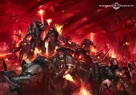
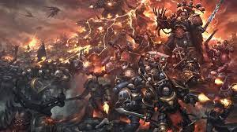
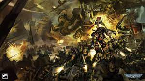

What is Warhammer 40k?
Warhammer 40k is a futuristic table top wargame where you build, paint and collect armies of miniatures and play war games!
Anyone can play Warhammer 40k and the basic rules are quite straight forward. On the Warhammer website you can download the most recent Core Rules now!
Core Rules for Warhammer 40k.
There are many different armies in the 40k universe and they all have varied agendas and goals to why they are at war with one another. Specific armies could be fighting to expand their empire, explore new parts of the galaxy, fighting for survival and/or
because they just love to fight!
The main factions are as follows:
The 'Imperium' faction is all the forces that represent mankind and humanity in the 40k universe. The Imperium have a variety of armies at its disposal:
- Space Marines
- Imperial Guard
- Sisters of Battle
- Adeptus Mechanicus
- Imperial Agents


Chaos are traitors to the Imperium and also come in the form of daemons that have been summoned from the warp. Their forces are legion and can be drawn from the following:
- Chaos Daemons
- Chaos Space Marines
- Death Guard
- Thousand Sons


And last, but not least, the Xenos forces are made up from several different factions of alien races that only hold aligment with themselves and very rarly other races. They are made up of the following
- Aeldari
- Necrons
- Orks
- T'au Empire
- Tyranids
